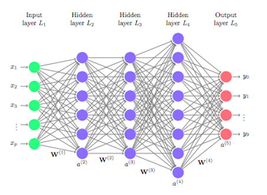

Neural Networks
A lot can be done with AI by connecting a lot of perceptrons
together to create an artificial neural network.
Neural networks use what are called hidden layers.

The neurons in the hidden layers perform functions and output
numbers that are then taken in by the consecutive layers.
Each neuron is looking for some specific component of the input data.
Neural networks can be used in various applications, such as image and sound recognition
The different features are able to be represented by numbers
Ex: the colors of the pixels are represented by the amount of red, blue, green in them

In the end, the neural networks will output a value. In the case of image
recognition, the probability that the image is a certain object
Another aspect within neural networks is deep learning, which you may have heard of.
In deep learning, there are just "deeper" neural networks, with more hidden layers
There are more complex components, which can solve tricker problems.
However, for this, you need faster computers for more math to be done.
It's also harder to make sense of why its giving us the answers that it gives us.
Neural newtorks are being used to make more and more decisions about our lives.
● Banks
● Cancer Tests
● Alexa
● Facebook Tags